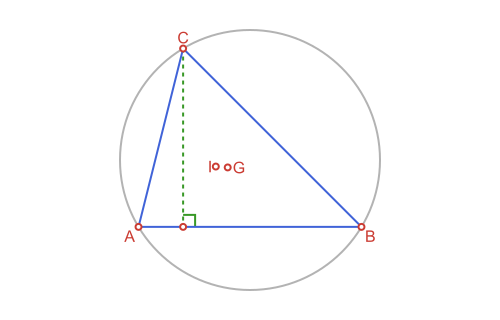
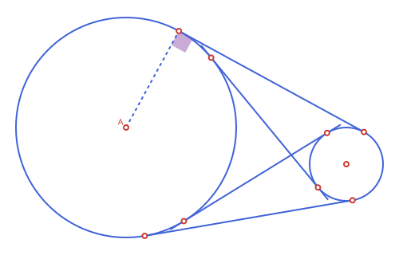

Apollonius.jl
Several pages on this site have a placeholder image (labeled "TODO: diagram") standing in for a real illustration. The text and code examples around them are complete and verified; the actual diagrams will be filled in over time.
Documentation for Apollonius.jl, a Julia toolkit for planar Euclidean geometry — points, segments, lines, rays, circles and triangles, plus the constructions you build with them (midpoints, intersections, projections, reflections, rotations, triangle centers, tangency, conics...).
Every exported type is its own struct, prefixed AP (APPoint, APCircle2, APTriangle, ...) and organized into a real abstract type hierarchy — no external geometry dependency, and genuine "is-a" relationships instead of loose, unrelated structs:
APObject{Dim,T}
├── APLocus{Dim,T}
│ ├── APCurve{Dim,T}
│ │ ├── APLine{Dim,T}
│ │ ├── APRay{Dim,T}
│ │ ├── APSegment{Dim,T}
│ │ ├── APConic2{T} -- circle, ellipse, parabola, hyperbola
│ │ │ ├── APCircle2{T}
│ │ │ ├── APEllipse2{T}
│ │ │ ├── APParabola2{T}
│ │ │ └── APHyperbola2{T}
│ │ └── APConicArc2{T} -- a bounded piece of one of the conics above
│ │ ├── APCircularArc2{T}
│ │ ├── APEllipticArc2{T}
│ │ ├── APParabolicArc2{T}
│ │ └── APHyperbolicArc2{T}
│ └── APSet{Dim,T}
│ ├── APHalfPlane2{T}
│ ├── APAngle2{T}
│ ├── APStrip2{T}
│ └── APRegion{Dim,T}
│ └── APPolygon{Dim,T}
│ ├── APTriangle{Dim,T}
│ ├── APQuadrilateral{Dim,T}
│ ├── APStraightNgon{Dim,T}
│ ├── APCircularSector2{T}
│ ├── APCircularSegment2{T}
│ ├── APAnnularSector2{T}
│ ├── APInterstice2{T}
│ ├── APCurvilinearTriangle2{T}
│ ├── APCurvilinearQuadrilateral2{T}
│ └── APCurvilinearNgon2{T}
├── APPoint{Dim,T}
├── APVector{Dim,T}
└── APBoundingBox{Dim,T}
APTransform{T}
└── APAffineMap{T}Why a custom type hierarchy at all, rather than building on an existing geometry package: two concrete problems, both hit in practice while this package still built on GeometryBasics.jl.
- Naming collisions. GeometryBasics.jl exports
Point,Circle,Triangle,Polygon,BoundingBox... — names that also collide with Luxor.jl's ownPoint,Circle,BoundingBox, etc. Since drawing (the main reason to load both packages together) needs exactly that combination, every call needed explicit qualification to say which package's type was meant. Every type here is prefixedAP, so it never collides with anything. - No real "is-a" relationships. With loose, unrelated structs, a
Trianglecouldn't be treated as aPolygoneven though it obviously is one — so shared logic (area,perimeter,centroid, ...) had to be reimplemented separately per shape, and a function that legitimately wants "any closed region" had no single type to accept. With a genuine abstract hierarchy — every closed shape really<: APPolygon— that logic is written once, generically, viasides()and a shared Green's-theorem line integral; a brand new shape (APCurvilinearNgon2,APAnnularSector2, ...) getsarea/perimeter/centroid/is_convex/point_in_polygonfor free just by implementingsides().
The practical upshot: APTriangle, APQuadrilateral, APCircularSector2 and every other closed shape genuinely is an APPolygon, so area/perimeter/centroid/is_convex/point_in_polygon are defined once, generically — not reimplemented per type. See each abstract type's own docstring (APObject, APLocus, APCurve, APSet, APRegion, APPolygon, APTransform) for what belongs where and why.
t = APTriangle(APPoint(0.0, 0.0), APPoint(1.0, 0.0), APPoint(0.0, 1.0))
t isa APPolygon, t isa APRegion, t isa APSet, t isa APLocus, t isa APObject # (true, true, true, true, true)
s = APSegment(APPoint(0.0, 0.0), APPoint(1.0, 1.0))
s isa APCurve, s isa APLocus # (true, true) -- not an APRegion: a segment isn't a closed shape
ang = APAngle2(APPoint(0.0, 0.0), APPoint(1.0, 0.0), APPoint(0.0, 1.0))
ang isa APSet, ang isa APRegion # (true, false) -- unbounded, so an APSet but not an APRegion
m = APAffineMap(1.0, 0.0, 0.0, 1.0, 0.0, 0.0)
m isa APTransform, m isa APObject # (true, false) -- APTransform is its own separate hierarchySee the README for the full feature overview, and the API Reference for every exported function and type. For a guided tour with explanations and worked examples, start with:
- Points, Lines & Rays
- Circles
- Triangles & Triangle Centers
- Tangency & Apollonius Problems
- Polygons & Bounding Boxes
- Conics: Ellipse, Parabola & Hyperbola
- Affine Maps
Quick example
using Apollonius
a, b, c = APPoint(0.0, 0.0), APPoint(5.0, 0.0), APPoint(1.0, 4.0)
t = APTriangle(a, b, c)
centroid(t) # center of mass[2.0, 1.3333333333333333]circumcircle(t) # circle through a, b, cAPCircle2([2.5, 1.5], 2.9154759474226504)incenter(t) # center of the inscribed circle[1.7331256880626402, 1.3531836465727276]l = APLine(a, b)
perpendicular_through(l, c) # altitude from cAPLine([1.0, 4.0] -> [1.0, 9.0])intersection(l, circumcircle(t))2-element Vector{APPoint{2, Float64}}:
[0.0, 0.0]
[5.0, 0.0]
Figures, via Luxor.jl
This package doesn't depend on Luxor.jl, but if you load both, a path function becomes available for every type here, via a package extension, plus @to_luxor_picture and current_path_bbox for sizing/positioning a Drawing automatically instead of guessing coordinates by hand. The point of all of it is exactly what this documentation itself needs: it's the tool this site's own illustrations (once filled in, see the note above) get built with. See Drawing with Luxor.jl at the end of this site for the full rundown.
A quick taste — the four common tangent lines of two circles, sized and centered automatically by @to_luxor_picture!, with the points of tangency picked out, the angle between the two external tangents shaded, and one radius dashed in:
using Apollonius
using Luxor: @svg, sethue, setdash, setopacity,
fillpreserve, strokepath,
julia_blue, julia_green, julia_red, julia_purple,
gsave, grestore
import Luxor
sz = @to_luxor_picture! width=500 height=320 margin=20 begin
circle1 = APCircle2((300,300), 300)
circle2 = APCircle2((900,200), 100)
el1, el2 = external_tangent_lines(circle1, circle2)
il1, il2 = internal_tangent_lines(circle1, circle2)
ang = APAngle2(el1.p1, circle1.center, el1.p2)
end
pts = [el1.p1, el1.p2, el2.p1, el2.p2, il1.p1, il1.p2, il2.p1, il2.p2]
@svg begin
sethue(julia_blue)
path(circle1, action = :stroke)
path(circle2, action = :stroke)
gsave()
sethue(julia_purple)
setopacity(0.5)
path(ang, action = :fill, as = :rsector, radius = 20)
grestore()
path([il1, il2], action = :stroke, extend = 20)
path([el1, el2], action = :stroke, extend = 0)
gsave()
setdash(:dash)
path(APSegment(circle1.center, el1.p1), action = :stroke)
grestore()
path(pts)
path([circle1.center, circle2.center])
sethue("white"); fillpreserve()
sethue(julia_red); strokepath()
label("A", :NW, circle1.center)
end sz.width sz.height